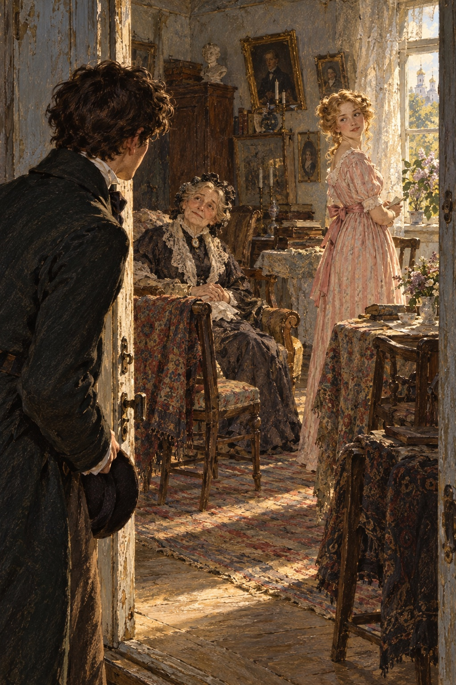
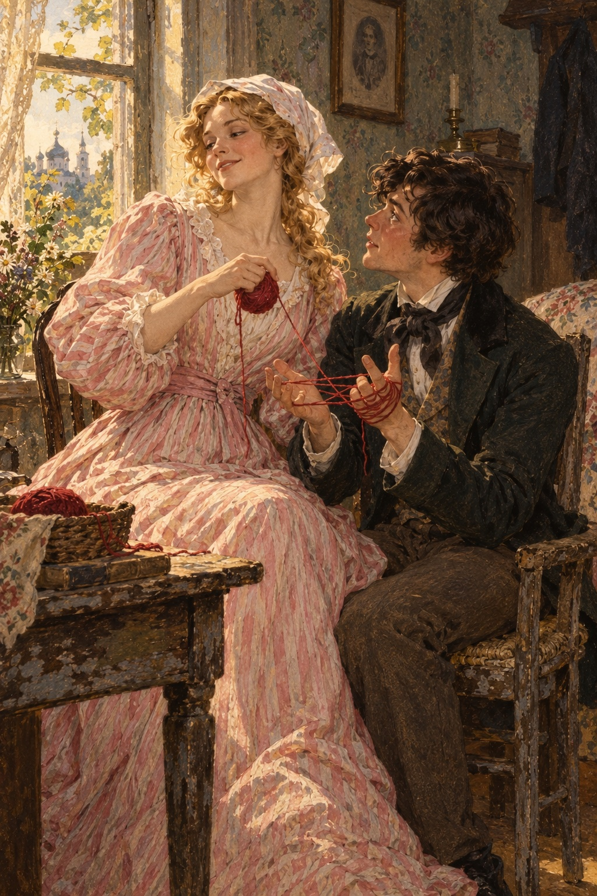

Ivan Turgenev · First Love
제4장
온몸이 저절로 떨리는 채
나는 별채로 들어섰다.
좁고 지저분한 현관에서
늙은 하인이 나를 맞았다.
희끗희끗한 머리에
구릿빛으로 검은 얼굴,
돼지처럼 작고 침울한 눈을
한 사람이었다.
이마와 관자놀이에는
평생 본 적 없을 만큼
깊은 주름이 패여 있었다.

그는 접시에
살을 다 발라 먹은 청어 등뼈를
담아 들고 있었다.
발로 안쪽 방의 문을 닫으며
퉁명스럽게 물었다.
“무슨 일이십니까?”
“자세키나 공작부인이
계십니까?”
내가 물었다.
“보니파티!”
문 너머에서
쇳소리가 섞인 여자 목소리가
날카롭게 울렸다.
하인은
말없이 내게 등을 돌렸다.
닳아 해진 제복의 등판과
누렇게 변한 가문 문양 단추
하나가 보였다.
그는 접시를 바닥에 내려놓고
안으로 들어갔다.
“경찰서에는 다녀왔어?”
그 목소리가 다시 들렸다.
하인이 무어라 중얼거렸다.
“뭐라고?
누가 왔다고?
옆집 도련님?
그럼 들어오시라고 해.”
“응접실로 드시지요.”
하인이 다시 나타나
바닥의 접시를 집어 들며 말했다.
나는 옷매무새를 고치고
‘응접실’로 들어갔다.
작고 어수선한 방이었다.
값싼 가구들이
급히 가져다 놓은 듯
놓여 있었다.
창가에는
팔걸이가 부러진 안락의자에
쉰 살쯤 된 여자가 앉아 있었다.
머리에는 아무것도 쓰지 않았고
얼굴도 예쁘지 않았다.
낡은 초록색 옷을 입고
목에는 알록달록한
털실 스카프를 둘렀다.
작고 검은 두 눈이
나를 뚫어지게 보았다.
나는 다가가
고개를 숙였다.
“자세키나 공작부인께
말씀드리는 영광을
얻은 건가요?”
“내가 자세키나 공작부인이에요.
댁은 옆집 브이 씨의 아들이지요?”
“그렇습니다.
어머니의 말씀을 전하러 왔습니다.”
“앉아요.
보니파티!
내 열쇠 못 봤어?”
나는 어머니의 답을 전했다.
공작부인은
굵고 붉은 손가락으로
창틀을 두드리며 들었다.
말을 마치자
다시 나를 빤히 쳐다보았다.
“좋아요.
꼭 갈게요.”
한참 뒤에야
그녀가 말했다.
“그런데 참 젊군요.
나이가 몇이에요?”
“열여섯 살입니다.”
나는 저도 모르게
말을 더듬었다.
공작부인은 주머니에서
글씨가 가득 적힌
기름때 묻은 종이들을 꺼냈다.
종이를 코앞까지 들이대고
뒤적이기 시작했다.
“좋을 때지.”
그녀가 갑자기 말했다.
의자에서 몸을 돌리며
자꾸 꿈틀거렸다.
“어려워할 것 없어요.
우리 집은 격식 안 차려요.”
‘너무 안 차리는군.’
나는 속으로 생각했다.
그녀의 볼품없는 모습에
저절로 거부감이 들었다.
그때
응접실의 다른 문이
벌컥 열렸다.
어제 정원에서 본 아가씨가
문간에 나타났다.
한 손을 들었고,
얼굴에는 웃음이 스쳤다.
“내 딸이에요.”
공작부인이
팔꿈치로 그녀를 가리켰다.
“지나, 옆집 브이 씨 아드님이야.
이름이 뭐라고 했지?”
“블라디미르입니다.”
나는 일어서며 대답했다.
긴장한 탓에
혀가 꼬였다.
“아버지 이름은?”
“페트로비치입니다.”
“그래!
내가 아는 경찰서장 중에도
블라디미르 페트로비치가 있었지.
보니파티, 열쇠 찾지 마.
내 주머니에 있어.”
아가씨는
아까 그 웃음을 띤 채
나를 바라보았다.
눈을 조금 가늘게 뜨고
고개를 한쪽으로 기울였다.
“저는 벌써
볼데마르 씨를 뵈었어요.”
그녀가 말했다.
은빛 같은 목소리가
달콤하고 서늘한 기운이 되어
내 몸을 스쳐 갔다.
“그렇게 불러도 되겠지요?”
“그럼요.”
나는 겨우 대답했다.
“어디서 봤다는 거야?”
공작부인이 물었다.
딸은 대답하지 않았다.
“지금 바쁘세요?”
아가씨가 나를 바라보며 물었다.
“아닙니다.”
“그럼 엉킨 털실을 푸는 걸
도와주시겠어요?
이리 오세요.”
그녀는 고개를 까딱하고
응접실을 나갔다.
나는 뒤따라갔다.
우리가 들어간 방은
가구가 조금 더 낫고
놓인 모양도 한결 세련됐다.
하지만 그때의 나는
거의 아무것도 눈여겨볼 수 없었다.
꿈속을 걷는 듯했고,
온몸이 터무니없이 행복해서
팽팽하게 긴장했다.
아가씨는 자리에 앉아
붉은 털실 타래를 꺼냈다.
맞은편 의자를 가리켜
나를 앉히더니,
타래를 조심스럽게 풀어
내 두 손 위에 걸쳐 놓았다.

그동안 말은 한마디도 없었다.
움직임은 묘하게 느긋했고,
살짝 벌어진 입술에는
밝고 짓궂은 웃음이
여전히 어려 있었다.
그녀는
접은 마분지에 실을 감기 시작했다.
그러다 갑자기
맑고 재빠른 눈길로
나를 바라보았다.
나는 저절로
눈을 내리깔았다.
평소에는
반쯤 감고 있던 눈을
활짝 뜰 때면
그녀의 얼굴은
완전히 달라졌다.
마치 얼굴에
빛이 쏟아지는 듯했다.
“어제 저를 보고
무슨 생각을 하셨어요,
볼데마르 씨?”
조금 뒤 그녀가 물었다.
“분명 저를 나쁘게 보셨겠지요?”
“저는… 공녀님…
아무 생각도…
제가 어떻게….”
나는 당황해서
제대로 대답하지 못했다.
“들어 보세요.”
그녀가 말했다.
“아직 저를 잘 모르시지요.
저는 좀 별난 사람이에요.
누구든 제게는
언제나 진실만 말했으면 좋겠어요.
듣자 하니 열여섯 살이시라면서요?
저는 스물한 살이에요.
훨씬 나이가 많으니까
제게는 꼭 사실대로 말하고…
제 말도 잘 들으셔야 해요.”
그녀가 덧붙였다.
“저를 보세요.
왜 쳐다보지 않으세요?”
나는 더욱 당황했지만
그녀에게 눈을 들었다.
그녀는 웃었다.
이번에는 아까의 웃음이 아니라
나를 어여삐 보는 듯한
다른 웃음이었다.
“저를 보세요.”
그녀가 목소리를 낮춰
다정하게 말했다.
“싫지 않아요.
얼굴이 마음에 들어요.
우리 사이가 좋아질 것 같아요.
그쪽도 제가 마음에 드세요?”
마지막 말에는
장난기가 담겨 있었다.
“공녀님….”
내가 입을 열었다.
“먼저,
저를 지나이다 알렉산드로브나라고
부르세요.
그리고 아이들은 왜….”
그녀가 말을 고쳤다.
“아니, 젊은 분들은 왜
느끼는 대로 말하지 않지요?
그건 어른들이나 하는 거예요.
저를 좋아하시잖아요?”
그녀가 솔직하게 말해 줘서
기쁘기는 했다.
하지만 나를 아이로 보는 듯해
마음이 조금 상했다.
나는 소년 취급을 받지 않으려고
될 수 있는 대로
태연하고 점잖은 표정을 지었다.
“물론입니다,
지나이다 알렉산드로브나.
아주 마음에 듭니다.
숨길 생각도 없습니다.”
그녀는
천천히 고개를 저었다.
“가정교사가 있나요?”
갑자기 그녀가 물었다.
“아니요.
없어진 지 오래됐어요.”
나는 거짓말을 했다.
프랑스인 가정교사와 헤어진 지
한 달도 안 됐기 때문이다.
“아, 그렇군요.
이제 다 컸네요.”
그녀는
내 손가락을 가볍게 탁 쳤다.
“손을 똑바로 드세요!”
그러고는
부지런히 실을 감았다.
그녀가 눈을 들지 않는 틈을 타
나는 얼굴을 살피기 시작했다.
처음에는 몰래,
나중에는 점점 대담하게.
어제보다 더 아름다워 보였다.
얼굴의 모든 것이
섬세하고 영리하고 사랑스러웠다.
그녀는
흰 커튼이 드리워진 창에
등을 돌리고 앉아 있었다.
커튼을 뚫고 들어온 햇살이
솜털 같은 금빛 머리와
깨끗한 목,
부드럽게 내려간 어깨,
고요하고 여린 가슴을
은은하게 비추었다.
그녀를 바라볼수록
한없이 소중하고
가까운 사람이 되어 갔다.
아주 오래전부터
알고 지낸 것 같았다.
그녀를 알기 전까지는
아무것도 모르고
살지도 않은 것 같았다.
그녀는
앞치마를 두르고
오래 입은 듯한 어두운 옷을
입고 있었다.
나는 그 옷과 앞치마의
주름 하나하나까지
쓰다듬고 싶었다.
옷자락 아래로
구두 끝이 보였다.
그 구두 앞에라도
사랑에 겨워 무릎을 꿇을 것 같았다.
‘내가 지금
그녀 앞에 앉아 있다.
그녀와 아는 사이가 됐다.
세상에, 얼마나 행복한가!’
기뻐서 의자에서
벌떡 일어날 뻔했다.
맛있는 걸 먹는 아이처럼
두 다리를 조금 흔드는 데 그쳤다.
나는 물 만난 물고기처럼
편안하고 좋았다.
평생 이 방에서,
이 자리에서 떠나고 싶지 않았다.
그녀가 천천히 눈을 들었다.
맑은 눈이 다시
다정하게 빛났다.
그녀는 또 웃었다.
“저를 그렇게 보시네요.”
그녀가 느리게 말하며
손가락을 들어 나를 타일렀다.
나는 얼굴이 붉어졌다.
‘다 알고 있어.
전부 보고 있는 거야.’
그런 생각이 스쳤다.
‘어떻게 모르겠어.
어떻게 못 보겠어.’
그때 옆방에서
무엇인가 달그락거렸다.
군도의 쇠고리 소리가 났다.
“지나!”
응접실에서
공작부인이 외쳤다.
“벨로브조로프가
새끼 고양이를 가져왔어!”
“새끼 고양이요?”
지나이다가 외쳤다.
그녀는 벌떡 일어나
실뭉치를 내 무릎에 던지고
방 밖으로 뛰어나갔다.
나도 일어섰다.
털실 타래와 실뭉치를
창틀에 올려놓고
응접실로 나갔다.
나는 어찌할 바를 몰라
그 자리에 멈춰 섰다.
방 한가운데에는
줄무늬 새끼 고양이가
네 발을 쫙 벌리고 있었다.
지나이다는
고양이 앞에 무릎을 꿇고
조심스럽게 얼굴을 들어 올렸다.
공작부인 곁에는
금발 곱슬머리의 젊은 장교가
우뚝 서 있었다.
창문 사이 벽을
거의 다 가릴 만큼
덩치가 컸다.
얼굴은 붉었고
눈은 불룩했다.
경기병 장교였다.
“정말 우습게 생겼어요!”
지나이다가 거듭 말했다.
“눈도 회색이 아니라 초록색이고,
귀는 또 얼마나 큰지!
고마워요, 빅토르 예고리치.
정말 친절하세요.”
나는 그 장교가
어제 보았던 젊은 남자들 중
하나임을 알아보았다.
그는 웃으며 고개를 숙였다.
박차가 딸깍 울리고
군도의 고리가 달그락거렸다.
“어제 아가씨께서
귀 큰 줄무늬 새끼 고양이를
갖고 싶다고 하셨지요.
그래서 구해 왔습니다.
하신 말씀은 곧 제게 명령입니다.”
그는 다시 고개를 숙였다.
고양이는
가냘프게 울고
바닥 냄새를 맡기 시작했다.
“배가 고픈가 봐요!”
지나이다가 외쳤다.
“보니파티! 소냐!
우유 좀 가져와요.”
낡은 노란 옷에
빛바랜 스카프를 두른 하녀가
우유 접시를 들고 들어왔다.
그녀는 접시를
고양이 앞에 놓았다.
고양이가 몸을 떨더니
눈을 감고 우유를 핥았다.
“분홍빛 혀 좀 보세요.”
지나이다가 말했다.
거의 바닥에 닿도록
고개를 낮추고
고양이의 코앞을
옆에서 들여다보았다.
배를 채운 고양이는
새침하게 발을 움직이며
가르랑거리기 시작했다.
지나이다가 일어섰다.
하녀를 돌아보고
무심하게 말했다.
“데려가.”
“고양이 값으로
손에 입 맞출 영광을 주시지요.”
경기병 장교가
이를 드러내며 웃었다.
새 군복에 꽉 들어찬
커다란 몸이
한 번 들썩였다.
“양손 다요.”
지나이다가 두 손을 내밀었다.
장교가 손등에 입 맞추는 동안
그녀는 어깨 너머로
나를 바라보았다.
나는 꼼짝 않고 서 있었다.
웃어야 할지,
말을 해야 할지,
그냥 입을 다물어야 할지
알 수 없었다.
그때 열린 현관문 너머로
우리 집 하인 표도르가 보였다.
그가 내게 손짓했다.
나는 무심코 그에게 갔다.
“무슨 일이야?”
“마님이 도련님을 데려오라십니다.”
그가 속삭였다.
“답을 전하러 가서
돌아오지 않는다고
화가 나셨어요.”
“내가 여기 온 지
그렇게 오래됐어?”
“한 시간도 넘었습니다.”
“한 시간이나 넘었다고?”
나는 저도 모르게 되물었다.
응접실로 돌아가
고개를 숙이며 인사했다.
발도 공연히
바닥에 끌었다.
“어디 가세요?”
지나이다가
장교 뒤에서 얼굴을 내밀고
물었다.
“집에 가 봐야 합니다.”
나는 공작부인을 향해
말을 이었다.
“그럼 한 시쯤
저희 집에 오신다고
전하겠습니다.”
“그렇게 전해요, 젊은 양반.”
공작부인은 황급히
코담배갑을 꺼냈다.
코담배를 하도 세게 들이마셔
내가 움찔할 정도였다.
“그렇게 전해요.”
그녀는 눈물이 고인 눈을
자꾸 깜박이며
헛기침하듯 말했다.
나는 다시 고개를 숙이고
몸을 돌려 방을 나왔다.
누군가 뒤에서 지켜본다는 걸 아는
어린 사람 특유의
등줄기가 어색한 느낌이 들었다.
“볼데마르 씨,
우리 집에 또 오세요.”
지나이다가 외쳤다.
그러고는 다시 웃었다.
‘왜 자꾸 웃는 거지?’
표도르와 집으로 돌아오며
나는 생각했다.
그는 한마디도 하지 않았지만
못마땅한 기색으로
내 뒤를 따라왔다.
어머니는 나를 꾸짖었다.
그 공작부인 집에서
대체 무엇을 하느라
그리 오래 있었느냐고
의아해했다.
나는 아무 대답도 하지 않고
내 방으로 올라갔다.
갑자기
몹시 슬퍼졌다.
울지 않으려고 애썼다.
나는
그 경기병 장교가 질투 났다.